UDN
Search public documentation:
ProceduralBuildingsCH
English Translation
日本語訳
한국어
Interested in the Unreal Engine?
Visit the Unreal Technology site.
Looking for jobs and company info?
Check out the Epic games site.
Questions about support via UDN?
Contact the UDN Staff
日本語訳
한국어
Interested in the Unreal Engine?
Visit the Unreal Technology site.
Looking for jobs and company info?
Check out the Epic games site.
Questions about support via UDN?
Contact the UDN Staff
Procedural Buildings (程序化建筑物)
概述
定义建筑物
Building Groups(建筑物组合)
当设计不仅仅是一个简单形状的建筑物时，通常需要使用多个体积。但是出于性能原因，您应该把这新体积组合到一起。这可以通过选择一个体积作为‘Base(基础)’体积，然后将通过使用'Base'属性将其他体积附加到该基础体积上来完成。通过使用附加物编辑器或者关联菜单中的'ProcBuilding -> Group Buildings' 选项，整个过程会变得更加容易。编辑器工具条上的 'Prefab Lock(预制锁定)'按钮也用于帮助您确定是选中整个 ProcBuilding 组还是选择组中的单独的ProcBuilding体积。组中的'Base(基础)'ProcBuilding体积将会以浅绿色显示它的线框，而不是使用一般的黄色，并且可以通过使用'ProcBuilding(程序化建筑物) -> Select Base Building(选择基础建筑物)'来快速地选中它。 您仅需要在Base建筑物上设置 Ruleset(规则集) ，因为它的子建筑物将会继承这个规则集。但是，如果您想覆盖同一ProcBuilding组合中的某些区域的规则集，那么您可以在那个子Procbuilding体积上进行单独设置。注意，一个单独的建筑物组使用的所有网格物体都归'Base（基础）'ProcBuilding 体积所有，所以如果您在编辑器中点击这些网格物体，您将会发现你选中的是那个体积。建筑物属性
以下介绍了ProcBuilding(程序化建筑物) 体积的属性 - 其中大部分属性将会在本文后面进行详细介绍。| Ruleset(规则集) | 应用到这个体积上的ProcBuildingRuleset 。 |
|---|---|
| bGenerateRoofMesh(是否生成房顶网格物体) | 是否为这个建筑物生成房顶网格物体多边形。 |
| bGenerateFloorMesh(是否生成地面网格物体) | 是否为这个建筑物生成一个地面多边形。 |
| bApplyRulesToRoof(是否应用规则集到顶部) | 是否在建筑物的房顶及墙壁上应用规则集。 |
| bApplyRulesToFloor(是否应用规则集到地面) | 是否在建筑物的地面及墙壁上应用规则集。 |
| bSplitWallsAtRoofLevels(是否在层顶分割墙壁) | 是否应该在每个层顶水平分割整个建筑物组。 |
| bSplitWallsAtWallEdges(是否在墙壁边缘分割墙壁) | 当另一个面和一个建筑物面相交时是否垂直地分割该建筑物面。 |
| SimpleMeshMassiveLODDistance(简单网格物体大LOD距离) | 距离多远时建筑物变换为低-LOD版本。 |
| RenderToTexturePullBackAmount(渲染到贴图拉回量) | 当为LOD生成 渲染-到-贴图 时从建筑物将拉回的程度(并且剪切细节))。 |
| RoofLightmapRes(顶部光照贴图分辨率) | 照亮建筑物的房顶所使用的分辨率。 |
| NonRectWallLightmapRes(非长方形墙壁光照贴图分辨率) | 非长方形墙壁多边形上的光照所使用的分辨率。 |
| LODRenderToTextureScale(LOD渲染到贴图比例) | 控制LOD渲染-到-贴图的分辨率。 |
| BuildingMaterialParams(建筑物材质参数) | 在特定建筑物中应用到网格物体的MaterialInstances上设置的额外参数。可以用于给墙染色等。 |
| bBuildingBrushCollision（是否启用建筑物画刷碰撞） | 是否在建筑物体积本身上启用碰撞。 |
规则集
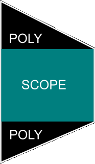
一旦找到了描述建筑物墙壁的一组矩形区域集，该规则集通过进行一下两件事情之一进行工作：- 把一个矩形区域细分为较小的矩形范围。
- 放置一个占用了这个矩形区域空间的网格物体。
规则集属性
一旦您已经创建了一个新的规则集(正常是使用内容浏览器创建)，您可以在Facade编辑器中打开该规则集。如果没有选中任何规则节点，那么属性窗口将会显示规则集本身的属性：| DefaultRoofMaterial(默认顶部材质) | 应用到建筑物房顶多边形的材质。 |
|---|---|
| DefaultFloorMaterial(默认地面材质) | 应该应用到建筑物的地面多边形上的材质。 |
| DefaultNonRectWallMaterial(默认非长方形墙壁材质) | 应用于为了填充墙壁的矩形区域周围的洞而创建的多边形的材质。 |
| RoofZOffset(顶部Z轴偏移) | 沿着Z轴给房顶（整个建筑物的房顶）多边形应用的偏移量。注意 RoofEdgeScopeRaise 通常是构成建筑物顶部周围墙壁的较好方法。 |
| NotRoofZOffset | 沿着Z轴应用给房顶(任何体积的顶部而不是整个建筑物的顶部)多边形的偏移量。注意 RoofEdgeScopeRaise 通常是构成建筑物顶部周围墙壁的较好方法。 |
| FloorZOffse(地面Z轴偏移量) | 沿着Z轴应用到地面(整个建筑物的底部)上的偏移量。 |
| NotFloorZOffset | 沿着Z轴应用到地面(任何体积的底部而不是整个建筑物的底部)上的偏移量。 |
| RoofPolyInset | 将房顶多边形的顶点拉入的程度。 |
| FloorPolyInset | 地面多边形的顶点拉入的程度。 |
| BuildingLODSpecular | 控制建筑物低-LOD版本的整体高光。 |
| RoofEdgeScopeRaise | 将接触到房顶的矩形区域扩展这项所设置的量，从而在建筑物房顶周围构成较短的墙壁。 |
| LODCubemap | 在建筑物低-LOD版本上的立方体贴图区域(通常是玻璃)上所使用的立方体贴图。 |
| bLODOnlyRoof | 如果该项为TRUE，那么仅为建筑物的低-LOD版本创建一个房顶多边形。 |
Mesh Rule(网格物体规则)
这是个非常重要的规则，它通过使用传入的矩形区域的大小和位置真正地给建筑物添加网格物体。创建网格物体时应该总是以左下角为原点，Z轴向上，X轴向右。您必须指定您期望网格物体占用的空间大小。这用于调整用于填充那个空间的网格物体的大小。这使您可以扩展传入的矩形区域的外围(比如栏杆或修剪)。 每个网格物体节点支持一组特定的网格物体，称为 BuildingMeshes(建筑物网格物体) ，然后该节点将从那个数组列表中随机地选择网格物体。数组中的每个网格物体所具有的属性如下所示。| Mesh(网格物体) | 要使用的静态网格物体。 |
|---|---|
| DimX(X轴维度) | 网格物体在X轴方向上的维度(宽度)。 |
| DimZ(Z轴维度) | 网格物体在Z轴方向上的维度(高度)。 |
| Chance(几率) | 从数组中选中这个网格物体的几率。 |
| Translation(平移量) | 当放置网格物体时应用给网格物体的可选平移量(或平移范围)。 |
| Rotation(旋转量) | 当放置网格物体时应用给网格物体的可选旋转量(或旋转度数范围)，以度数为单位。 |
| bMeshScaleTranslation(是否缩放网格物体平移量) | 如果该项为true，将会通过应用到网格物体上的任何缩放比例来缩放所指定的Translation（平移量）。 |
| bOverrideMeshLightMapRes(是否覆盖网格物体光照贴图分辨率) | 如果该项为TRUE, 则使用OverriddenLightMapRes 而不是使用网格物体上所设置的分辨率。 |
| OverriddenMeshLightMapRes(覆盖的网格物体光照贴图分辨率) | 如果bOverrideMeshLightMapRes 为TRUE时，这个网格物体上所使用的光照分辨率。 |
| SectionOverrides(部分覆盖) | 允许您为这个网格物体的每个部分指定一系列的可能的材质，用作为该部分的随机覆盖材质。 |
Occlusion Test(遮挡检测)
Mesh Rule(网格物体规则)执行的另一个重要的功能是检测传入的矩形区域是否和建筑物的另一部分相交。考虑以下图片： 正如您所看到的，窗户和建筑物的房顶相交，看上去很糟糕。Mesh Rule(网格物体规则)可以判断一个矩形区域是否受到遮挡、受到部分遮挡、还是没有受到遮挡。对于完全遮挡的情况(比如，该范围完全地位于建筑物的另一部分的内部)，那么将不必放置网格物体。如果该范围没有被遮挡，那么将从BuildingMeshes数组中选择一个指定的网格物体。如果该范围受到部分遮挡(就像上面的示例那样)，将会使用 PartialOccludedBuildingMesh 选项中指定的网格物体。
正如您所看到的，窗户和建筑物的房顶相交，看上去很糟糕。Mesh Rule(网格物体规则)可以判断一个矩形区域是否受到遮挡、受到部分遮挡、还是没有受到遮挡。对于完全遮挡的情况(比如，该范围完全地位于建筑物的另一部分的内部)，那么将不必放置网格物体。如果该范围没有被遮挡，那么将从BuildingMeshes数组中选择一个指定的网格物体。如果该范围受到部分遮挡(就像上面的示例那样)，将会使用 PartialOccludedBuildingMesh 选项中指定的网格物体。
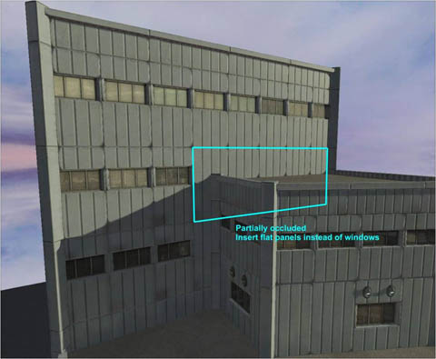
如果您想禁用这个遮挡检测，那么可以通过设置 bDoOcclusionTest 选项为FALSE来完成，这样就总是会添加一个BuildingMeshes数组中的网格物体。注意，遮挡检测通过使用恰好在范围的四个角内部的四个点来执行判断。碰撞
默认，作为ProcBuilding一部分的网格物体不具有零粗细玩家碰撞(仅具有零粗细武器碰撞)。玩家碰撞仅在体积（比如遮挡体积）本身内发生，这有几个优点：- 碰撞是平滑的快速的。
- 当ProcBuilding的规则集改变时碰撞不改变。
Repeat Rule(重复规则)
这个规则获得一个矩形区域，并不把它沿着一个坐标轴细分为多个较小的矩形区域。 首先您可以通过使用 RepeatAxis 选项选择一个坐标轴 (X 或Z) ，它将会沿着那个坐标轴将该矩形区域细分为等尺寸的矩形块。它通过将矩形区域块尽可能细分为足够多的小矩形块，来确保任何小矩形块都小于 RepeatMaxSize 定义的尺寸。 根据建筑物的大小的不同，这个过程将会生成大量的新的矩形区域。
以下这个示例，使用Repeat Rule(重复规则)沿着Z轴将一个大的平面细分为一系列的‘地板’，然后使用一个Repeat Rule沿着X轴将每个地板细分为一系列的窗户矩形区域，然后使用使用Mesh Rule真正地放置窗户网格物体。
首先您可以通过使用 RepeatAxis 选项选择一个坐标轴 (X 或Z) ，它将会沿着那个坐标轴将该矩形区域细分为等尺寸的矩形块。它通过将矩形区域块尽可能细分为足够多的小矩形块，来确保任何小矩形块都小于 RepeatMaxSize 定义的尺寸。 根据建筑物的大小的不同，这个过程将会生成大量的新的矩形区域。
以下这个示例，使用Repeat Rule(重复规则)沿着Z轴将一个大的平面细分为一系列的‘地板’，然后使用一个Repeat Rule沿着X轴将每个地板细分为一系列的窗户矩形区域，然后使用使用Mesh Rule真正地放置窗户网格物体。

Split Rule(分割规则)
这个节点和Repeat Rule类似，它获得一个矩形区域，并根据所定义的 SplitAxis 将该区域细分为较小的矩形区域。然而，Repeat Rule根据输入矩形区域尺寸的不同所生成的细分范围的数量也会有所变化，但是Split Rule(分割规则)将总是(除非输入矩形区域太小)生成同样数量的输出范围。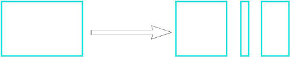
要想定义分割矩形区域的方式，设计人员需要填充 SplitSetup 数组。数组中的每项元素将会在规则集节点上产生一个输出矩形区域和一个额外的输出连接器。这允许您对矩形区域的每个部分做不同的处理。这是数组中每项元素所具有的属性：| bFixSize(是否固定尺寸) | 如果该项为TRUE, 这个输出矩形区域的尺寸固定为 FixedSize 。如果该这项为FALSE，这输出矩形区域的大小将随着输入矩形区域大小而扩展。 |
|---|---|
| FixedSize（固定尺寸) | 仅当bFixSize设置为TRUE时使用该项，用于精确地定义输出的矩形区域的大小。 |
| ExpandRatio(扩展比率) | 当多个元素项设置bFixSize为FALSE时，该项用于控制它们的伸展程度。较大的值意味着随着输入矩形区域的变大会有更大的伸展。 |
| SplitName（分割名称） | 这项用于给规则节点上创建的输出端添加标签。 |
Alternate Rule(交替规则)
建筑物的某些区域总是以相同的特点开始并结束，而在开始和结束之间有另一种类型的特点。这个样的处理仅通过使用Repeat(重复)和Split(分割)规则并不容易完成，所以这时可以使用 Alternate Rule(交替规则)。 和Repeat和Split规则一样，您需要使用 RepeatAxis 属性指定一个坐标轴。这个规则有两个输出，标签为 A 和 B 。在默认配置中，随着矩形区域变大，B区域将会伸展，但A区域不会伸展。在添加另一个输出之前您应该使用 BMaxSize 属性指出B可以变大的程度，并且使用 ASize 来指出A应该总是保持多大。
和Repeat和Split规则一样，您需要使用 RepeatAxis 属性指定一个坐标轴。这个规则有两个输出，标签为 A 和 B 。在默认配置中，随着矩形区域变大，B区域将会伸展，但A区域不会伸展。在添加另一个输出之前您应该使用 BMaxSize 属性指出B可以变大的程度，并且使用 ASize 来指出A应该总是保持多大。
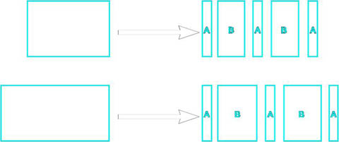
还有一些其他的选项为你提供其他的控制：| bInvertPatternOrder | 这个选项使得您使用可变尺寸的B来开始和结束，而不是使用固定尺寸A（也就是将它从ABABA 改为BABAB）。 |
|---|---|
| bEqualSizeAB | 如果该项为TRUE,强制A和B为同样的尺寸。 |
Occlusion Rule(遮挡规则)
正如在Mesh Rule节点中所提到的，有些时候需要在矩形区域上执行一次遮挡检测。这个规则节点允许您在任何矩形区域上执行这个检测，而不是仅在放置网格物体之前执行检测。比如，或许您想在将建筑物的地面分割开一边为中央门腾出空间之前对地面执行一次检测。Top/Bottom Rule(顶部/底部 规则)
因为从建筑物体积中提取出的每个矩形区域都是通过同一规则集进行处理的，所以有时在比较复杂的建筑物上您会看到奇怪的外观。比如，如果您的规则集在每个矩形区域的底部放置店铺，这样建筑物的上层部分可能也会出现店面，而这没有任何意义。要想修复这个问题，Top/Bottom Rule节点允许您测试矩形区域的顶部或底部是否和整个ProcBuilding 体积组的顶部或底部一样。以下示例帮助我们解释了这个现象： 这个节点首先查看输入矩形区域的顶部是否和整个建筑物的顶部一样。如果一样，那么它将删除 ExtractTopZ 定义的分割量，并把这矩形区域传出到'Top'输出端。如果不一样，那么它将删除 ExtractNotTopZ 定义的分割量，并把这矩形区域传出到'Not Top'输出端。这样，您可以在整个建筑物的顶部比在每层的顶部进行较大的剪辑处理。同样，可以使用 ExtractBottomZ 和 ExtractNotBottomZ 的值对建筑物的底部执行类似的过程。然后，那个范围的剩余部分将会从'Mid'输出端传出。如果没有任何东西连接到'Top', 'Not Top', 'Bottom' 或'Not Bottom'上，那么将不会从输入矩形区域分割掉任何东西。
这个节点首先查看输入矩形区域的顶部是否和整个建筑物的顶部一样。如果一样，那么它将删除 ExtractTopZ 定义的分割量，并把这矩形区域传出到'Top'输出端。如果不一样，那么它将删除 ExtractNotTopZ 定义的分割量，并把这矩形区域传出到'Not Top'输出端。这样，您可以在整个建筑物的顶部比在每层的顶部进行较大的剪辑处理。同样，可以使用 ExtractBottomZ 和 ExtractNotBottomZ 的值对建筑物的底部执行类似的过程。然后，那个范围的剩余部分将会从'Mid'输出端传出。如果没有任何东西连接到'Top', 'Not Top', 'Bottom' 或'Not Bottom'上，那么将不会从输入矩形区域分割掉任何东西。
Random Rule(随机规则)
Mesh Rule(网格物体规则)允许您从一个集合中选择一个网格物体，但是有时候您想在规则集中提前对网格物体的选择进行控制，比如，给建筑物的某个特定地面或面选择一个完全不同的外观。另外，有时候您或许想从集合中选择多个选项。Random Rule(随机规则)可以让您完成这个处理。您首先使用 NumOutputs 属性指出您需要的输出数量。然后使用 MinNumExecuted 和 MaxNumExecuted 来决定这些输出中要触发的数量。通过使用这个规则，您可以以随机的方式将网格物体彼此堆叠到一起，比如为建筑物的特定区域选择一个不同的 A/C 单元、标志和光照。以下显示了这个应用的示例：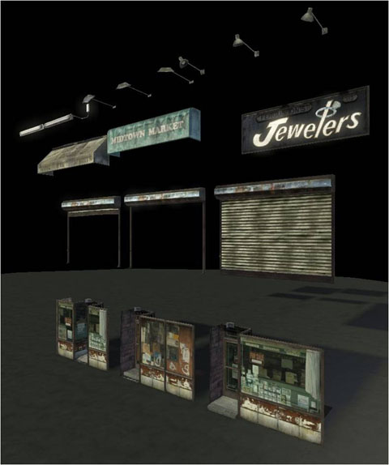
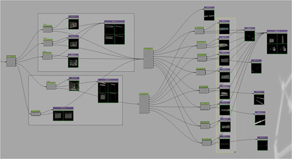
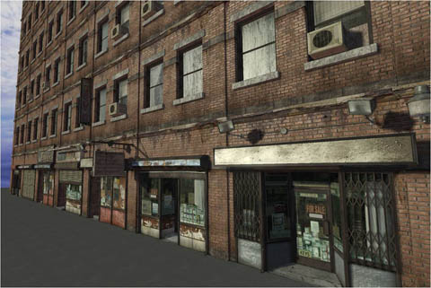
Quad Rule(嵌块规则)
有时候，建筑物的某些区域使用具有平铺材质的平坦嵌块网格物体进行处理是最好的解决方案，而这个规则允许您实现这样的处理。同时允许您给建筑物添加一个由两个三角形组成的嵌块网格物体，这个规则还可以调整UVs以便使您可以基于矩形区域的尺寸进行平铺。这由 RepeatMaxSizeX 和 RepeatMaxSizeZ 参数控制，和Repeat Rule类似。注意，在内存中仅有一个嵌格网格物体版本，并且通过使用材质实例来执行基于每个实例的UV调整。这个过程是自动完成的，但是您必须确保您给嵌格应用的基本材质(使用 Material 参数)支持4个材质实例参数： U_Scale, U_Offset, V_Scale, V_Offset。有一个主要材质 EngineBuildings.BuildingQuadMaterial ，您可以将它用作为应用到嵌格上的材质实例的基础， 以下是在建筑物的一侧使用quad rule规则的示例：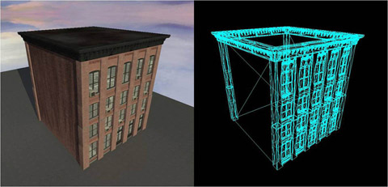
注意，在这个示例中，砖块风格是平铺状态，但是泥土风格在整个网格物体上仅出现了一次。这个效果可以很容地在材质中进行设置。如果您不想执行平铺，那么您可以设置 bDisableMaterialRepeat 为TRUE。您也可以使用 QuadLightmapRes 属性控制每个嵌格网格物体上的光照贴图分辨率。您也可以使用 YOffset 沿着Y轴偏移嵌格网格物体(也就是，将其向建筑物内或外偏移)。Sub Ruleset（子规则集）
当使用规则集工作时，有时可能要创建非常复杂的图表。同时，有时您需要创建要在多个其他规则集中使用的部分规则集(比如，一个非常详细的店面区域)。为了辅助解决这个问题，可以创建SubRuleset ，并使用 SubRuleset 属性来指向另一个规则集。无论向该节点中传入什么矩形区域，稍后都会被传入到那个规则集的开始处。这样，您可以是保持每个规则集都很小，并且避免一些不必要的复制。注意，一定要小心，不要创建‘循环’，既规则集之间彼此引用的情形。Size Rule(尺寸规则)
这提供了一个基于长方形范围维度的简单选项。首先，您使用 SizeAxis 属性来获取您感兴趣的像素，然后就会在那里确定尺寸。如果矩形区域的维度比这个确定的尺寸小，那么它将会从‘Less’输出端传出，否则它将从 'Greater/Equal' 输出端传出。_bUseTopLevelScopeSize_ 选项允许您基于‘顶级’矩形区域（也就是整个建筑物的面的尺寸）作出决定，而不是使用传入的矩形区域. Size Rule用于避免网格物体变得过扁。在以下的示例中，具有3个窗户的网格物体压扁后效果不是很好。然后设计人员使用Size Rule来在空间较小的地方使用具有2个或1个窗户的网格物体。同样的效果可以通过剪辑工作来完成。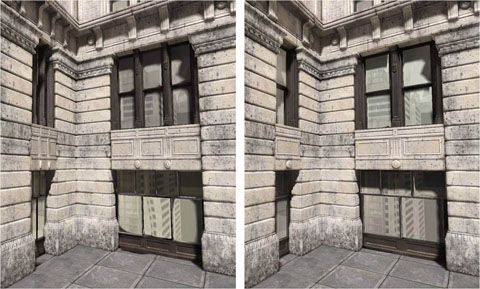
注释
这个特殊节点不执行任何动作，但是使您可以在规则集区域的周围放置一个方框并注释它们，和Kismet中的注释一样。Variation Rule(变化规则)
默认情况下，应用到ProcBuilding上的规则集会被应用到所有建筑物表面上。但是，有时候需要在不同的表面上具有不同的外观。要想支持这个功能，您可以使用Variation Rule。要想添加 '变化'到一个规则集中，首先您必须在Facade选中那个规则集本身(您可以通过取消选中所有节点来完成这个操作)。然后，您可以添加一个元素到 Variations 数组中，给那个变化一个名称(比如 'PlainBrickSide')。然后，无论何时当您在Facade中放置一个Variation Rule时，它将会有针对您为那个规则集创建的每个新改变的输出端，并且在顶部添加了一个‘default’输出端。 当关卡设计人员想在建筑物的某个面上使用特定的变化时，它们可以简单地执行以下操作：- 跳转到几何体编辑模式。
- 选中您想修改的建筑物的面。
- 右击并选择ProcBuilding(程序化建筑物)菜单。
- 从列表中选择需要的变化名称。
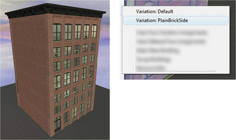
这里是一些使用具有很多变化的规则集可以完成的其他处理的示例。这是一种创建城市中的多样性建筑的很好的方法，不必创建大量的独特的规则集。
Edge Mesh Rule(边缘网格物体规则)
有时候在每个面的边缘都是平坦的地方创建规则集从而使得拐角可以自然地出现是可能的。以下是这个应用的示例： 然而，并不总是这种情形。当网格物体不是十分匹配时,创建转角的一个较好方法是沿着边缘放置网格物体。Edge Mesh Rule完成了这个处理。它将获得传入矩形区域的左侧边缘，并从‘Edge’输出端生成一个新的矩形区域，在两个面之间半路的地方产生转角。矩形区域的其他部分稍微低从每个垂直边缘向内拉动 MainXPullIn 属性中指定的量。如果两个面之间的角度小于 FlatThreshold 度，那么将不会生成Edge举行范围。结果如下面示例所示：
然而，并不总是这种情形。当网格物体不是十分匹配时,创建转角的一个较好方法是沿着边缘放置网格物体。Edge Mesh Rule完成了这个处理。它将获得传入矩形区域的左侧边缘，并从‘Edge’输出端生成一个新的矩形区域，在两个面之间半路的地方产生转角。矩形区域的其他部分稍微低从每个垂直边缘向内拉动 MainXPullIn 属性中指定的量。如果两个面之间的角度小于 FlatThreshold 度，那么将不会生成Edge举行范围。结果如下面示例所示：
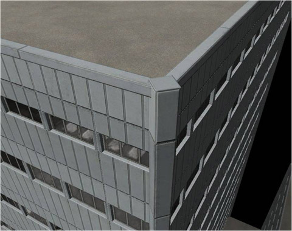
Corner Rule(转角规则)
为了在建筑物上获得较好的转角效果，通常需要创建自定义转角网格物体来处理各个面之间不同的角度。Corner Rule节点的设计使得这个处理更加容易。当使用Corner Rule时，指定每个矩形区域'拥有'它的左侧边缘。它将会切割掉传入的矩形区域的左侧和右侧的部分，并将左侧的矩形区域从输出端输出，使它尽可能匹配两个面之间的角度。在右侧，留一个缺口，以便让在建筑物右侧周围的矩形区域填充该区域。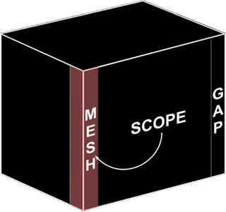
通过给 Angles(角度) 数组添加元素项，您可以使得转角节点支持任何度数的角度(比如， 0、-90 和+90 度)。 您也可以使用 CornerSize 属性控制边缘矩形范围所占用的X空间量。如果您想覆盖每个角度所使用的空间量，那么您可以修改 Angles 数组中的 CornerSize 为一个非零值。转角节点的其他属性如下所示:| FlatThreshold | 如果两个范围之间的角度小于这个值(以度数为单位)，那么则不添加网格物体。 |
|---|---|
| bNoMeshForConcaveCorners | 如果该项为TRUE, 则不会预留空缺，或者插入针对凹面角的网格物体。 |

房顶角落
当使用曲折的或有斜面的角落时您会遇到的一个问题是：房顶多边形(基于ProcBuilding体积表面生成)不会和房顶的实际形状相匹配。要想修复这个问题，您可以在Corner(转角)节点中指定一些额外信息，这些信息将用于重新塑造房顶多边形的转角形状。注意，系统将会找到最高的转角节点获得这个信息。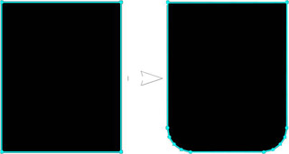
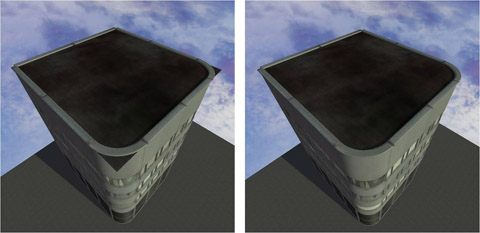
Corner Rule节点中用于控制房顶形状的属性如下所示：| CornerType(转角类型) | 转角的形状 - 这可以使 EPBC_Default (标准的方形转角), EPBC_Chamfer (斜面转角) or EPBC_Round (圆形转角)。 |
|---|---|
| RoundTesselation(圆形细分) | 如果转角类型是 EPBC_Round，该项控制了圆形转角的细分程度。 |
| RoundCurvature（圆形曲率） | 这控制了圆形转角的形状。 |
| CornerShapeOffset(转角形状偏移量) | 从曲线网格物体区域的开始处实际地将房顶多边形角落 斜切或使其变圆的程度。 |
水平分割
为了处理建筑物，系统必须找到在每个边缘处相遇的顶级矩形区域。当有2以上的边缘在一个单独的边缘相遇时这个处理便会有些困难，正如以下图像所示： 从这个图像来看，可以确定的是为黄色边缘选择一个角落网格物体来使得效果看上去更好是不可能实现的。要想修复这个问题，系统将会‘剪切’ProcBuilding组中每层房子的矩形区域。参照如下图片：
从这个图像来看，可以确定的是为黄色边缘选择一个角落网格物体来使得效果看上去更好是不可能实现的。要想修复这个问题，系统将会‘剪切’ProcBuilding组中每层房子的矩形区域。参照如下图片：
 如果您想禁用这个行为，那么可以通过设置ProcBuilding体积上的 bSplitWallsAtRoofLevels 为FALSE来实现。这个过程正常情况下可以很好地工作，因为很多真实的建筑物将在整个建筑物的每层上进行不断的剪辑，如下所示：
如果您想禁用这个行为，那么可以通过设置ProcBuilding体积上的 bSplitWallsAtRoofLevels 为FALSE来实现。这个过程正常情况下可以很好地工作，因为很多真实的建筑物将在整个建筑物的每层上进行不断的剪辑，如下所示：
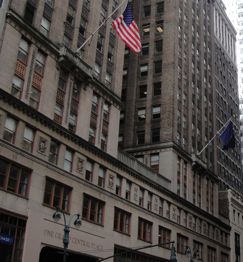
这里是启用了bSplitWallsAtRoofLevels选项和没有启用该选项的示例。正如您看到的，左侧的建筑有几个洞，因为在较低的房顶和建筑物的其他部分相遇处该功能不能很好地进行处理。
LOD（细节层次级别）
 将建筑物的表面渲染到贴图中的过程是非常消耗时间的，所以不会在您编辑建筑物的过程中执行这个过程。如果您想生成低LOD贴图，您可以或者在您的地图中重新构建光照(确保选中 'Generate Building LOD Textures(生成建筑物LOD贴图)'选项)，或者选中您需要的ProcBuildings并从主要编辑器菜单中选择 'Tools -> Generate Selected Buildings LOD Textures' 选项。
将建筑物的表面渲染到贴图中的过程是非常消耗时间的，所以不会在您编辑建筑物的过程中执行这个过程。如果您想生成低LOD贴图，您可以或者在您的地图中重新构建光照(确保选中 'Generate Building LOD Textures(生成建筑物LOD贴图)'选项)，或者选中您需要的ProcBuildings并从主要编辑器菜单中选择 'Tools -> Generate Selected Buildings LOD Textures' 选项。
窗户
建筑物通常具有玻璃窗户，这通常通过使用反光玻璃来实现。 因此，LOD需要一个针对反光窗户的蒙板；否则这将不能反射，并且在变换时会产生非常明显的跳跃现象。这个过程是自动完成的，但是需要在网格物体上进行一些设置。然后生成低LOD贴图，在建筑物上执行3遍渲染。它们是：- 不带光照渲染，收集漫反射颜色。
- 纯光照渲染，收集光照信息。
- 窗户模式，所有的窗户区域都是白色的，非窗户区域都是黑色的。
 要想让您的网格物体支持‘窗户模式’，那么首先必须给它们应用一个MaterialInstance(而不是材质)。 MaterialInstance应该支持一个Scalar Parameter(标量参数)：RenderWindowCubemapMask。当以'Window Mode'模式渲染建筑物时应该设置这个参数的值为1.0。还有一个可选参数'RenderLOD' ，如果您想在LOD贴图生成过程中禁用材质的某些功能，那么可以在这三遍渲染中都设置这项为1.0。
这个过程生成2个贴图。一个是漫反射的、不带光照颜色、在贴图的alpha通道中存储1-位‘窗户模板’的贴图。另一个贴图是光照贴图，该贴图通常用于非常低分辨率的情况。在低-LOD建筑物网格物体上这些贴图在材质中调制到一起。这里有2个贴图的原因是在窗户区域内您需要在立方体贴图的顶部应用光照。以下是应用了这两个贴图后上面所示的低-LOD建筑物的效果：
要想让您的网格物体支持‘窗户模式’，那么首先必须给它们应用一个MaterialInstance(而不是材质)。 MaterialInstance应该支持一个Scalar Parameter(标量参数)：RenderWindowCubemapMask。当以'Window Mode'模式渲染建筑物时应该设置这个参数的值为1.0。还有一个可选参数'RenderLOD' ，如果您想在LOD贴图生成过程中禁用材质的某些功能，那么可以在这三遍渲染中都设置这项为1.0。
这个过程生成2个贴图。一个是漫反射的、不带光照颜色、在贴图的alpha通道中存储1-位‘窗户模板’的贴图。另一个贴图是光照贴图，该贴图通常用于非常低分辨率的情况。在低-LOD建筑物网格物体上这些贴图在材质中调制到一起。这里有2个贴图的原因是在窗户区域内您需要在立方体贴图的顶部应用光照。以下是应用了这两个贴图后上面所示的低-LOD建筑物的效果：
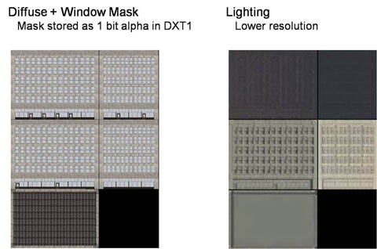
动态载入
低-LOD、单独部分网格物体在不同的子关卡中需要使用高细节建筑(从很多网格物体实例制作而来)是经常的情况。系统自动支持这个处理。当您添加一个ProcBuilding导入动态载入的子关卡中时，它将自动地生成一个新的子关卡，该子关卡的名称和高细节关卡的名称一致，但是它的前面具有 '_LOD' 后缀。比如，如如果您添加一个ProcBuilding到 CityBlock_01中，将会自动地创建一个名称为CityBlock_01_LOD的动态载入关卡，并将向其添加一个ProcBuilding_SimpleLODActor(它是StaticMeshActor的子类)。在它自己的子关卡中而不是在_P地图具有低-细节版本的原因是：使得城市的这部分区域在不需要迁出-P地图的情况下就能正常工作。 当您编辑高细节ProcBuilding时，低细节将会自动更新。同时迁出城市街区的高细节版本和低细节版本通常是个好主意。 注意，当向一个没有子关卡的地图中添加ProcBuilding时，则不需要添加LOD地图 - ProcBuilding本身将具有低-细节网格物体。附加物
当您附加StaticMeshActor到一个ProcBuilding(使用Base属性)中时，当建筑物切换到低-细节版本将会导致隐藏那个网格物体。这通常是期望的出现的情形，因为低-细节版本可以将那个静态网格物体渲染到它的贴图中。当您在ProcBuilding的上面放置StaticMeshActor(比如一个 A/C 单元)，它将会自动地将它本身附加到建筑物上。 可以通过使用StaticMeshActor上的 bDisableAutoBaseOnProcBuilding 属性禁用这个行为。变换
虚幻引擎使用抖动方法来处理 变换/LOD。 为了使这个处理能正常工作，您需要在应用到建筑物网格物体(或者任何附加到建筑物上的StaticMeshActors所使用的网格物体)的任何材质上设置 bUsedWithScreenDoorFade 属性为TRUE。其他功能
建筑物统计数据
这是编辑器中的一个新选卡，允许您查看您的城市中建筑的统计数据。每个建筑物是一行，您可以查看组件、三角形、光照及LOD贴图内存应用方面的统计数据。对于那些非常大的需要较简单的规则集的定点建筑物或那些使用需要调整其光照设置或者简化网格物体的规则集的建筑物来说，这是非常有用的。双击一行将会把您带到那个建筑物处。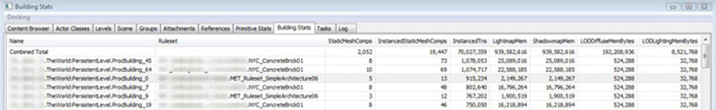
材质参数
可以设置每个建筑物上的建筑物网格物体材质中暴漏的参数。要想完成这个处理，需要向ProcBuilding上的 BuildingMaterialParams 数组中添加元素，并为那个参数填充名称和需要的颜色。这是一种创建城市中的多样性建筑的很好的方法，不必创建大量的独特的规则集。以下示例是使用了同样的规则集的一排建筑，但是使用这个功能改变了墙壁的颜色。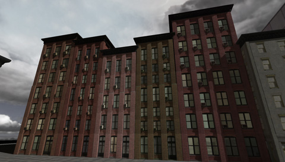
覆盖材质
您可以覆盖每个ProcBuilding上所生成的房顶、地面或则非-长方形墙壁多边形上所使用的材质。要想完成这个处理，首先要进入到几何体模式，选中您想使用的材质，选择表面，然后右击并选择'ProcBuilding -> Apply Material (MaterialName) To Face(程序化建筑物->应用材质 (材质名称) 到表面)'项。您可以通过右击建筑物并选择'ProcBuilding(程序化建筑物) -> Clear Face Variation Assignments(清除表面的变化分配)' 来清除每个表面的覆盖材质。网格物体化 房顶&地面
正如前面所提到的，默认 meshing rules(网格化规则)不会应用到建筑物的房顶或地面上。但是，有一些情况却需要对它们进行网格化处理(比如， 在类似于桥的建筑下面添加支持柱子)。有几种方法来完成这个操作。在 ProcBuilding 设置 bApplyRulesToFloor 或 bApplyRulesToRoof 项将启用 房顶 和/或 地面 区域上抽取出的区域和运行的规则。另一个选择是Ruleset变化设置中的 bMeshOnTopOfFacePoly 项。启用这项将会使得系统生成通常的地面或房顶多边形，然后将它们应用到地面或房顶的上面。这个处理的示例如下所示，在人行道的下面：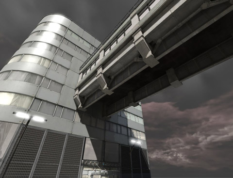